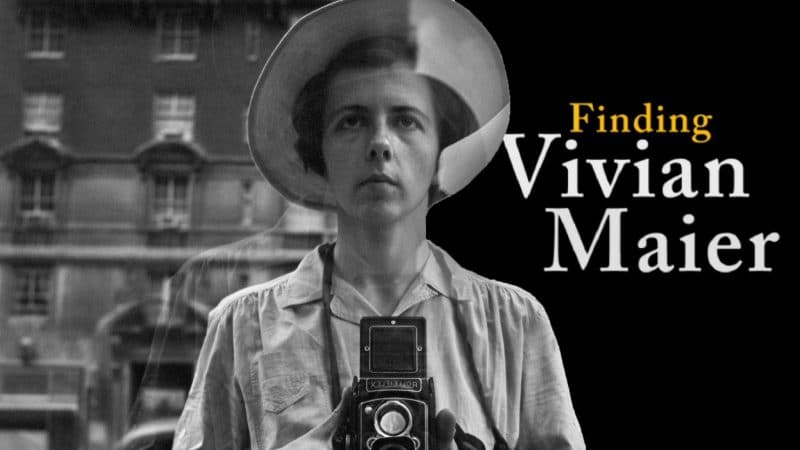

Vivian Maier
Vous avez sans doute entendu parler de l’histoire extraordinaire de Vivian Maier : elle était garde d’enfant de profession, et s’est adonnée toute sa vie à sa passion pour la photographie, à l’insu de son entourage et du monde. Ce n’est qu’à sa mort que le monde entier a pu découvrir son fabuleux travail de photographe humaniste, grâce à un extraordinaire hasard : un agent immobilier de 25 ans avait acheté en 2007 un lot de milliers de négatifs non identifiés, pour la modique somme de 400$. Et découvre juste après sa mort que l’auteure de cette oeuvre incroyable était Vivian Maier. Le monde se prend de passion pour cette histoire et découvre l’oeuvre d’une photographe qui ne saura jamais la reconnaissance qu’elle a aujourd’hui.
Mes Prestations